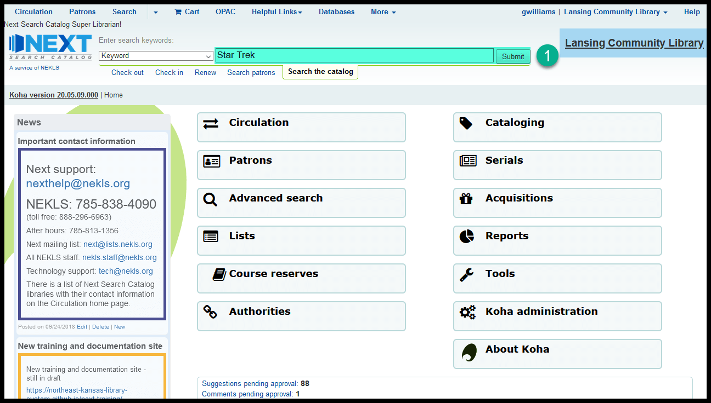
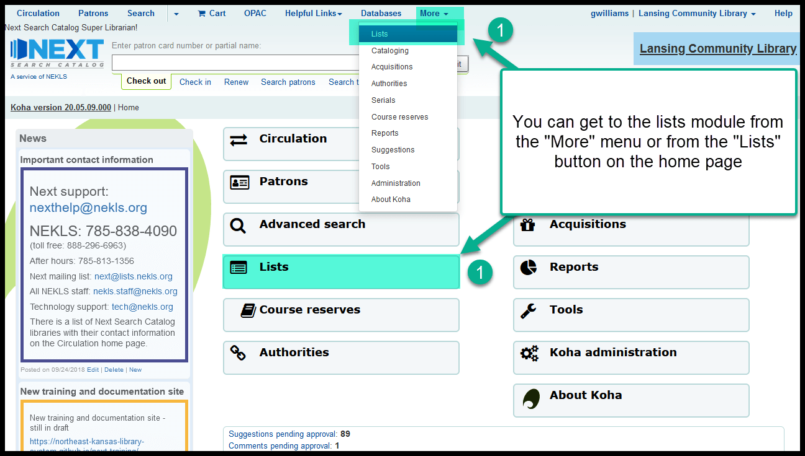

How to add items to an existing list¶
In the staff client¶
Adding from a search¶
Conduct a search

Check the checkboxes next to the title
Click on “Add to list” and select the name of the list from the drop-down menu
Click on “Save” in the pop-up window to add the items to the list
You can see what items are on a list by going to the lists module and searching for any of your own lists or any public lists
Adding from a title’s details page¶
From a title’s details page, click on “Add to” from the toolbar and select “List” from the drop-down menu
In the pop-up window, select the list you want to add to in the “Choose list” drop-down menu
Then click on “Save”
You can see what items are on a list by going to the lists module and searching for any of your own lists or any public lists
Batch adding from the lists module¶
Go to Lists

Choose the list you want to add titles to and click on the name of the list
Click on “+Add items” from the toolbar
In the pop-up window, add barcode numbers or biblio numbers - 1 number per line then click on “Save”
Those titles associated with those barcode numbers or biblio numbers will be added to the list
If you add try to add a barcode number or a biblionumber for a title that is alreay on the list, you’ll get an error warning asking you to check and make sure the title isn’t already on the list